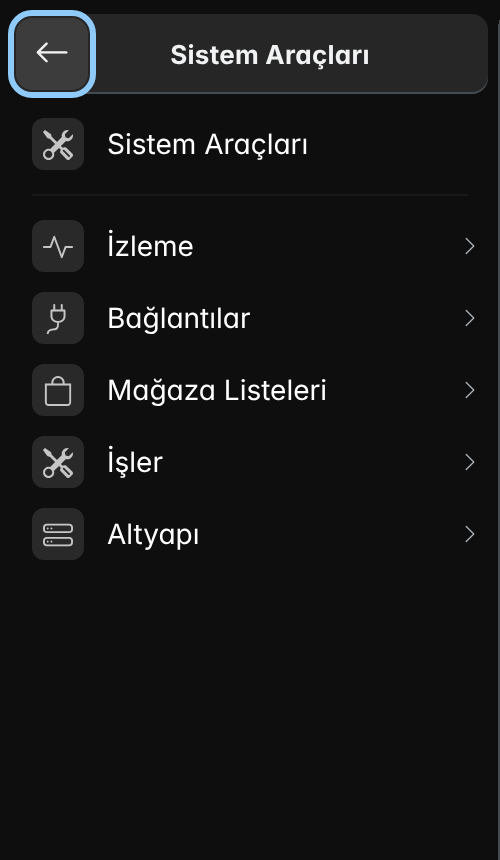
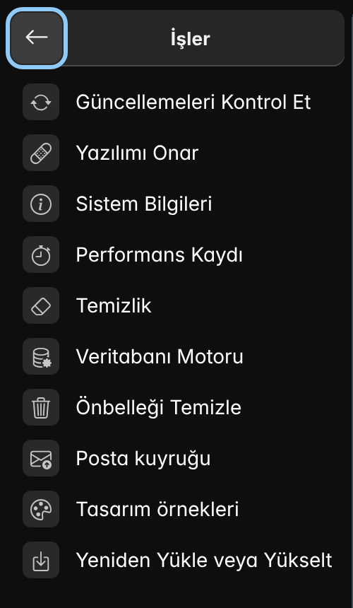

Bugün satır açılınca önce ayrı sayfaya giden satır ve beş grup gelir; araç bir tık daha geridedir. Öneride sayfadaki 19 aracın hepsi satırın altında, grup başlıklarıyla tek listede durur.
Bugünönce gruplar

sonra grubun araçları

Önerihepsi tek listede
Sistem Araçları
İzleme
Site Günlüğü
Denetim izi
Oturumlar
Bağlantılar
Uygulama Erişimi
Bağlantılar
Pazaryerleri
Mağaza Listeleri
Tüm Yönlendirme Kaynakları
Tüm Para Birimleri
İşler
Güncellemeleri Kontrol Et
Yazılımı Onar
Sistem Bilgileri
Performans Kaydı
Temizlik
Veritabanı Motoru
Önbelleği Temizle
Posta kuyruğu
Tasarım örnekleri
Yeniden Yükle veya Yükselt
Altyapı
Yedekleme Yöneticisi
Tek tık. Satıra girince araçların hepsi görünür; grup adı yalnız başlıktır, ayrı bir kademe açmaz.
Ayrı sayfa satırı yok. En üstteki "Sistem Araçları" satırı listeden kalkar.
Aynı araçlar, aynı yetkiler. Bir kişi hangi aracı bugün görüyorsa onu görür; görmediği aracın, boş kalan grubun başlığı da basılmaz.
Uzun liste. Alçak pencerede liste kendi içinde kayar, bugünkü iç menüler gibi.